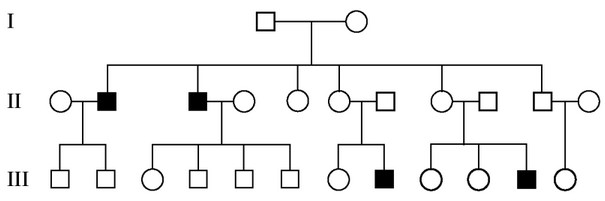

In the following human pedigree, squares represent males, circles represent females, and shaded symbols
indicate individuals affected with a disorder.

One of the affected males from the third generation has a child with a female who is a carrier. For the pedigree
shown above, which of the following best expresses the probability that the couple’s first son will be affected
with the disorder?
The disease is likely caused by a recessive allele. There is also a strong likelihood that the trait is sex-linked, since only males are affected.
The cross between an affected male and female carrier can be represented as:
$$ \underbrace{X^A X^a}_{\text{carrier mother}} \times \underbrace{X^A Y}_{\text{affected father}} \tag{recessive, sex-linked} $$
$$ \begin{array} {|c|c|c|} \hline
& X^A & X^a \\ \hline
X^A & X^AX^A &X^AX^a \\ \hline
Y & X^AY& \colorbox{yellow}{$X^aY$} \\ \hline
\end{array} $$
The probability that the son is affected is 50%.
In this problem, an autosomal trait would result in the same probability - 50% chance.
$$ \underbrace{Aa}_{\text{carrier mother}} \times \underbrace{aa}_{\text{affected father}} \tag{recessive, autosomal}$$
$$ \begin{array} {|c|c|c|} \hline
& A & a \\ \hline
a & Aa & \colorbox{yellow}{$aa$} \\ \hline
a & Aa & \colorbox{yellow}{$aa$} \\ \hline
\end{array} $$